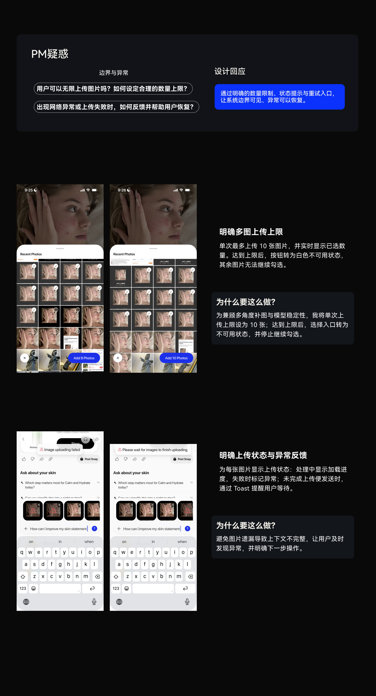
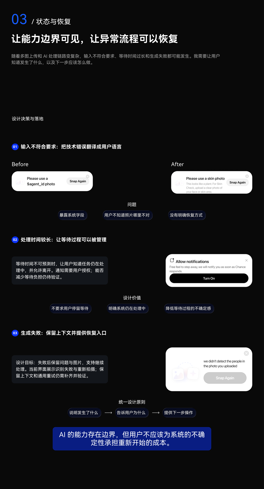
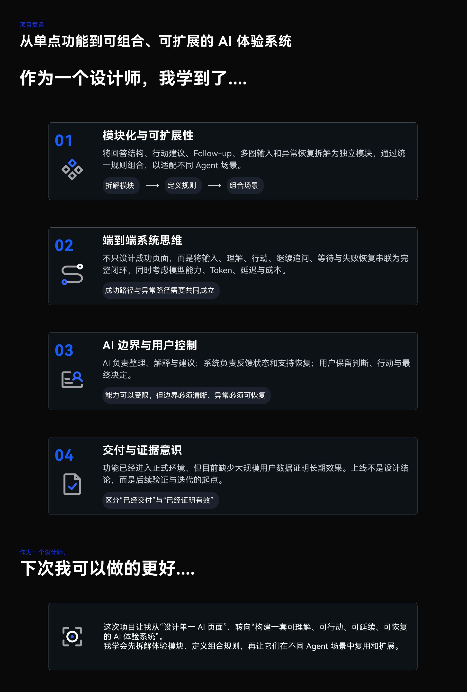

01 / Frame the problem
PROBLEM
People still had to find the priority and decide what to do after reading the analysis.
MY RESPONSE
I mapped the result and follow-up journey to locate gaps in information order and action priority.
CHANCE AI / CONSUMER AI
Making complex AI responses easier to understand, act on, and continue.
I designed the response structure, contextual follow-up, and multimodal feedback experience. Skin Care brings these decisions together in one continuous journey.
Explore the case
MY CONTRIBUTION
Chance is a consumer AI social product. My work connected the response, the next question, and the system states surrounding them.
PROBLEM
People still had to find the priority and decide what to do after reading the analysis.
MY RESPONSE
I mapped the result and follow-up journey to locate gaps in information order and action priority.
PROBLEM
Long AI output left people to sort the information themselves.
MY RESPONSE
I organized the answer around current state, priority concerns, and care steps.
PROBLEM
More images and longer answers introduce latency, model variability, and token costs.
MY RESPONSE
I worked with product and engineering to define response scope and a ten-image input limit.
PROBLEM
More specific questions emerge after a person sees a result.
MY RESPONSE
I connected suggested questions, free text, and additional images to the existing analysis context.
PROBLEM
Selection, generation, and failure all need explicit feedback.
MY RESPONSE
I defined the state coverage and followed implementation and design review. Context-preserving retry remains follow-up work.
THE CHALLENGE
An image analysis can describe a concern without making the next step clear. In Skin Care, the design question was how to move from reading a result to deciding what to do with it.
The team’s goal was to give people a reason to continue using Chance. I translated that goal into three connected design questions.
Continued use is a goal to validate, not a measured outcome of this case.
Bring the priority forward instead of asking people to sort through a long answer.
Keep follow-up connected to the result, with room for a person’s own question.
Make input limits, waiting, and failed uploads visible before people get stuck.
EXPERIENCE MODEL
PRODUCT ARCHITECTURE
Use uploaded visual context and skin feedback to organize visible redness, congestion, and texture concerns. The goal is to help someone identify what needs attention.
Turn abstract analysis into a readable priority and care direction, with explanations before optional product support.
Translate one insight into a daily plan, completion records, and future adjustment. Continued care and repeat use are design goals to validate.
The intended progression is from having advice to having a plan that can be followed and recorded. It is not evidence of improved skin health or retention.
01 / ANSWER STRUCTURE
I moved from parallel content categories to a sequence of user questions: understand the state, find the priority, then choose an action.
Status · Explanation · Advice · Routine · Products
What’s happening? → What matters? → What can I do?
THE ACTUAL BEFORE & AFTER
The earlier layout lacked a clear action, sufficient explanation, and continuing status feedback. The new sequence answers five questions: current state, explanation, priority, today’s action, and optional support.

The summary brings the overall state, top focus, and primary action together.
Skin Snapshot and Skin Pattern give the analysis a readable structure. Separating visible observations from AI inference remains an important content check.
The routine turns advice into ordered steps. Its completion controls communicate an intended action, not evidence of sustained use.
Recommendations follow the explanation and routine, so shopping does not lead the experience.
A clearer answer creates a new question: how can someone go deeper without starting over?
02 / CONTEXTUAL FOLLOW-UP
I connected follow-up to the current analysis, with suggested questions for people who need a starting point and free input for those who already know what they want to ask.
REFERENCE STUDY
These are the references documented during the project, rather than a claim about the products’ current interfaces.
A shared entry for camera, photos, and files; attachments enter the current composer and can be previewed, removed, or supplemented before sending. Images and text belong to one question.


The documented pattern moves from sources to the answer and related questions. Contextual suggestions provide a starting point, free input preserves individual intent, and each answer can lead to another question.


“What else can I ask?”
Relevant suggested questions“I want to explain my situation.”
Free text + optional images

IMAGE CONTEXT
Images and text form one follow-up. People can select, preview, remove, and supplement images before sending them with a question.
COMPLETE INPUT FLOW
Start from the existing result. Open the composer or image entry, take a photo or choose from the library, then select and review attachments. Remove an image or add more before sending text and images together.


03 / LIMITS & STATES
Adding more images also adds constraints. I worked through the selection limit and upload feedback so people can see what is allowed and which step needs attention.


INTERACTION DETAIL
The picker displays the selected count. At ten images, further selection is unavailable.


INTERACTION DETAIL
Show the status on the relevant attachment. If someone sends before an upload completes, explain that they need to wait.
The supplied generation-failure UI shows a retake entry. It does not yet demonstrate a complete context-preserving retry flow. Optional notifications also depend on permission and delivery behavior that still need validation.
AI STATES & RECOVERY
Invalid input, long processing, and generation failure are different situations. Each needs an explanation and a next step.
01 / INVALID INPUT
The earlier message exposed a system variable. The revision names the required image, explains the mismatch, and offers a retake entry.


02 / LONG PROCESSING
The design offers an optional notification entry so people can choose to leave while processing continues.

03 / GENERATION FAILURE
The supplied interface currently offers “Snap Again” after failed recognition.

REFLECTION & VALIDATION
This work connected answer structure, follow-up, image input, and system feedback. Each decision needed to hold together across the journey.
MODULARITY & SYSTEM THINKING
Shared context, input rules, and recovery paths connect these modules. Skin Care is the current application; reuse across other agents is an extension direction.
Input → generation → understanding → action or follow-up. Waiting and failure return paths must be considered alongside success, with model capability, tokens, latency, and cost.
AI organizes, explains, and suggests. The system reports state and limits and supports recovery. The user judges, chooses, acts, and decides whether to continue.
The feature entered production, while evidence of long-term user and business effects remains to be collected. Delivery is the starting point for validation and iteration.
WHAT I WOULD DO EARLIER
Align image limits, waiting strategy, and recovery rules before high-fidelity design. Then observe whether people can identify the priority, explain their next step, continue with a relevant question, and return over time.
DESIGN CONTRIBUTION
Response hierarchy, contextual questions, multimodal input rules, and feedback states, developed with product and engineering.
This case presents the design decisions and supplied interface evidence. It makes no measured retention or conversion claim.
NEXT TO VALIDATE
COMPLETE DESIGN BOARDS
All ten main boards and three alternative explorations from the original Chinese portfolio. Expand a board to inspect its complete diagrams, annotations, and UI. Alternative boards remain identified as explorations.




